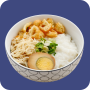
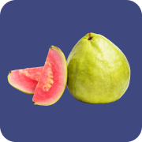

Hasil
Analisis feses Anda menunjukkan sedang diare.
Masalah pencernaan yang mungkin sedang diderita adalah:
diare, muntaber, disentri, keracunan makanan, atau infeksi bakteri
1
Hindari makanan dan minuman yang asam, pedas atau berserat, seperti:

Kopi

Jeruk

Sambal

Rujak

Pepaya
Rendang
2
Sebaiknya makan makanan yang berkuah, lembut, dan mudah dicerna, seperti:

Sup Ayam
Bubur Ayam
Bubur Sumsum
Telur Rebus
Jambu Biji
3
Perbanyak minum air mineral, minimal 8 gelas atau 2 liter sehari

4
Minum larutan oralit atau air kelapa untuk menggantikan cairan tubuh agar tidak dehidrasi

Larutan Oralit

Air Kelapa
5
Beristirahat dan mengurangi aktivitas fisik

Terdapat dua jenis diare, yaitu diare ringan dan diare kronis
Jika Anda mengalami buang air besar (BAB) sebanyak lebih dari lima kali sehari atau terjadi pendarahan, segera pergi ke dokter terdekat untuk mendapat penanganan lebih lanjut dan mengonsumsi obat diare.